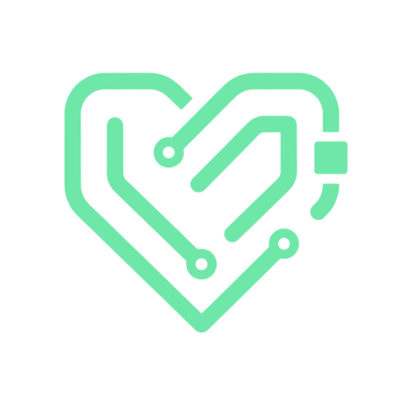

Free, no-nonsense tools that run in your browser. No accounts. No tracking. No ads.
If one saves you time, you can donate — that's the whole business model.
Cooking, alchemy and imperial delivery helper for Black Desert Online. Single file, works offline, remembers your setup.
CalculatorReconstitution math for powders: mg + mL → concentration → insulin-syringe units. Converts your numbers; never suggests a dose.
Estimators, converters, grabbers — small tools that replace subscriptions. Check back soon.
Every tool here is free forever. If one earned its keep, tip what it was worth to you — that funds the next one.